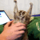
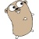

Saying hello world to Opera extensions!
From Opera 15 onward, Opera 11 & 12’s extension format is no longer supported, and instead, we’ve switched to Chromium’s extension model. Check out our new documentation for developing extensions for Opera 15 and higher and start building your own extensions.
Contents
- Introduction
- Configuring an extension
- Creating an extension icon
- Add a button to the Opera toolbar
- Creating a popup
- Packaging and installing the extension
Introduction
This article walks you through the basic steps to create your first Opera extension. You will create a toolbar button, which when pressed will open a popup that displays a Hello World!
message. Opera extensions are written using regular open web standards, so all you need to get started is a copy of Opera 11 and your text editor or IDE of choice.
Configuring an extension
First, you’ll create the extension configuration file, which holds the meta data describing the extension. This is where information such as the extension name, author and icon for the extension manager is specified. Opera extensions use the W3C Widgets packaging and configuration format, which you may be familiar with from Opera Widgets.
Go ahead and create a bare bones configuration file as follows:
<?xml version="1.0" encoding="utf-8"?>
<widget xmlns="http://www.w3.org/ns/widgets" id="http://www.example.org/helloworld">
<name>Hello extensions!</name>
<description>A simple hello world example</description>
<author href="yourURL" email="yourEMail">Enter your name here</author>
<icon src="icons/hello.png"/>
</widget>Save this file as config.xml in your development folder.
Creating an extension icon
You may have noticed the icon element referenced in the config file. This specifies the icon used in the extensions manager and the Opera extensions site. We recommend creating an icon of 64×64 pixels for this.
Download the hello.png icon and save it in the "icons" folder inside your development folder.
{kind=link}
Add a button to the Opera toolbar
Once you've configured your extension, you can start to create the actual code. Create a button, which is then added to the toolbar. This can be done with the following code:
<!doctype html>
<html lang="en">
<head>
<script>
window.addEventListener("load", function(){
var theButton;
var ToolbarUIItemProperties = {
title: "Hello World",
icon: "hello-button.png",
popup: {
href: "popup.html",
width: 110,
height: 30
}
}
theButton = opera.contexts.toolbar.createItem(ToolbarUIItemProperties);
opera.contexts.toolbar.addItem(theButton);
}, false);
</script>
</head>
<body>
</body>
</html>Save this file as index.html in your development directory.
Any Opera extension requires a start file, commonly called index.html. A different filename could be used but it would have to be specified in the config.xml file using the <content src=""/> syntax. This file is a bare bones HTML template with a script that creates the UI elements. The body of this document isn't used.
The script will create a toolbar item (a button) with a number of properties. A tooltip is created along with an 18×18 icon. A popup belonging to the button is also created with a specified size, along with a reference to where the popup UI is defined.
You can download the hello-button.png icon and save it in your development directory.
{kind=link}
Creating a popup
You’ve already created a button, and specified the size of the popup, so you just need to create the contents. This is just an HTML document, with its viewport set to the specified size. You can use any HTML, CSS, JavaScript or any other web technologies as you would normally use on a web page. This is a hello world example, so you’ll create a page which says just that:
<!doctype html>
<html lang="en">
<head>
<title>Hello World!</title>
<style>
h1 {
font: 14px helvetica, arial, sans-serif;
text-align: center;
}
</style>
</head>
<body>
<h1>Hello World!</h1>
</body>
</html>Go ahead and save this as popup.html in your development directory.
Packaging and installing the extension
You've almost got a finished extension. While developing, you can drag the config.xml file into Opera which will install it in Developer Mode. This aids development by allowing you to update your files and refresh the extension with the click of a button, rather than continually uninstalling and reinstalling.
When you're happy with your work and ready to release it, all you have left to do is to select all the files and zip them up. Once that is done, you can rename the zip file to HelloExtension.oex (remember to replace the .zip extension) and you're done.
Note on zipping extensions
You need to make sure you zip up your extension so that the files and directories that comprise it are in the root of the zip, and not inside a folder. To ensure this, make sure that you zip up the files inside your extension directory, and not the directory itself. Subtle, but it makes all the difference.
You can download the finished HelloExtension extension.
To install it as a regular user, i.e. not in Developer Mode, just drag the extension into Opera and it will ask you if you want to install it. You will see the icon you specified along with the meta data. Switch to a tab and try clicking on your newly created toolbar icon.
Try experimenting with the different properties of the toolbar button and the popup contents, until you feel comfortable with the process.
#introDavid Storey

David Storey heads up the Open the Web initiative at Opera. This small global team is tasked with improving the compatibility of web sites across Opera's wide range of browsers, as well as promoting web standards, accessibility and best practices, so that the Web will work for all standards-aware browsers, platforms, devices and users. He is a member of the W3C Mobile Web Best Practices Working Group.
On his blog, Slightly Ajar, he discusses this work, as well as random topics, from travel to music.
David previously worked for CERN, home of the World Wide Web, before taking up his post at Opera Software.
This article is licensed under a Creative Commons Attribution 3.0 Unported license.
Comments
The forum archive of this article is still available on My Opera.
-
Linked files hello-button.png and hello.oex both point to 404s
-

thanks great introduction!
-

You have a small mistakes there:
-
What is a "Development folder"?
-

@Dmitry Mironov thanks for pointing this out - I've fixed it now.
-

Not sure what is supposed to happen, looking at the code I can guess, but I don't see any new buttons after successfully installing the extension. I don't see it after uninstalling the extension and installing the linked version either (http://dev.opera.com/articles/view/opera-extensions-hello-world/hello.oex). I see no error messages in Dragonfly. Extension is enabled. Button doesn't appear on any hidden toolbars that I can see and no buttons called 'Hello World' or with the 'hello-button.png' image exist in the list of available buttons to add to the toolbar, either.
-
Hi!!! Nice introduction. Thank you
-

@lskibinski
-

@lskibinski
-

Sorry for the delay in getting back.
-

Going to write a clearer response _tomorrow_ - it's 2am apparently :P
-

Okay, back. I feel this should go in a proper bug tracker somewhere but I have better things to do than debug hello world examples.
-

urrrgh:
-
i followed your instruction but it fails to instal im on Mac ??? i get this message opera.oex is invalid, or the file there is not a valid widget file. ??? i double checked everything why will it not instal can you please provide a fix for me ?? Thanks
-

@Chris Mills:
-

Hello - are people still getting trouble with this? I have tried replacing all the files multiple times; it still works just fine for me.
-

How can I debug extension by Opera Dragonfly?
-

Installation failed. The extension is broken.
-

I have the same problem than others here :
-

Good, I can develop the hello world extension after reading the passage. The writer is a good teacher!
-

I downloaded hello.oex and hacked it, but it still didn't work in Opera 12.10 on Windows 7
-

Many thanks to the author! Everything works. I've solved my errors having corrected two my mistakes: I didn't notice that 1) hello-button.png is in the root of the "development folder" (so "development folder"\hello-button.png), but hello.png should be in "development folder"\icons\hello.png and 2) I've made .rar instead of .zip, but it should be .zip.
No new comments accepted.Supuhstar
Wednesday, March 28, 2012
ernesto ponce
Tuesday, April 24, 2012
Dmitry Mironov
Friday, April 27, 2012
in config.xml:
<icon src="hello.png"/>
later:
"Download the hello.png icon and save it in the "icons" folder inside your development folder."
You must place icon in the root of you dev folder or change icon source in config.xml to "icons/hello.png"
Ilia Andrienko
Wednesday, May 9, 2012
I have created a directory named "HelloWorldExtention" on my drive G:
then created all the files from this tutorial inside of it
then dragged config.xml file to opera.. and it just opened as regular xml
Tried with Opera 11.62 and Opera 12.00
What am I doing wrong?
Chris Mills
Thursday, May 10, 2012
@Ilia Andrienko by "development folder", we just mean the folder you are developing your extension in. I have tried dragging the config.xml file into the Opera browser, and it works for me, in 11.62 and 12.00 beta, so I am not sure what is wrong. Can you provide me a link to download your code, and I'll see if I can work it out?
thanks.
lskibinski
Saturday, May 12, 2012
Details:
Version: 11.62
Build: 1347
Platform: Linux
System: x86_64, 3.0.0-1-amd64
Pretty frustrating introduction to Opera extension development. I've read the instructions two or three times now and I'm pretty certain I haven't missed anything.
AlexZendejas
Sunday, May 13, 2012
@Ilia Andrienko
I had the same problem here, i solved it by completing the url on the xmlns attribute of the widget tag on the config.xml file. I realized I missed the 'http://'... I wrote <widget xmlns="www.w3.org/ns/widgets"... instead of <widget xmlns="http://www.w3.org/ns/widgets"
Chris Mills
Monday, May 14, 2012
I am having trouble working out what is going on with your problem, as I've tested the stuff in the article and it seems to work fine to me. Can you send me a link to download your version of the code, so I can look at it and see what the problem is? Although it sounds like it might be the build. Have you tried it on a couple of different builds?
Chris Mills
Monday, May 14, 2012
I've had another look, and the hello.oex extension attached to this article seemed to have become corrupted in some sort of strange way. I have rebuilt it again so it works, and re-uploaded it. Can you try it again, and let me know if it works now?
lskibinski
Friday, May 18, 2012
OK - so, downloaded the version attached to this page again and same deal - I can't see any button. In the interim I had updated my Opera version (details below) and lost all enthusiasm for the task (hence the delay).
Version: 11.64
Build: 1403
Platform: Linux
System: x86_64, 3.0.0-1-amd64
I had a suspicion previously it was some sort of caching issue because the author's name of the extension didn't change from 'John Doe' (the dummy author name I put in originally) and the one I downloaded - I thought it was more likely the linked extension simply used 'John Doe' as the author name rather than any bugs or caching issues existing here - I have high expectations and Opera always delivers ;)
However, I uninstalled the extension again just now, author's name was still John Doe, downloaded the hello.oex file to a new location, took a peek at the author's name ("David Storey, Opera Software") and ran:
$ opera hello.oex
and lo! author's name is still John Doe.
Because I feel super guilty for not having replied earlier, I did a bit of digging.
Inside my ~/.opera directory I did a:
$ find . | grep -i hello
and found these inside my "~/.opera/widgets/" directory:
-rw-r--r-- 1 luke luke 1504 May 12 18:59 hello_1.oex
-rw-r--r-- 1 luke luke 2252 May 12 19:01 hello_2.oex
-rw-r--r-- 1 luke luke 2284 May 12 19:47 hello2.oex
-rw-r--r-- 1 luke luke 4473 May 12 19:05 hello_3.oex
-rw-r--r-- 1 luke luke 2010 May 12 19:49 hello3.oex
-rw-r--r-- 1 luke luke 2284 May 12 19:09 hello_4.oex
-rw-r--r-- 1 luke luke 2284 May 12 19:09 hello_5.oex
-rw-r--r-- 1 luke luke 4473 May 12 19:14 hello_6.oex
-rw-r--r-- 1 luke luke 2284 May 12 19:25 hello_7.oex
-rw-r--r-- 1 luke luke 2284 May 12 19:44 hello_8.oex
-rw-r--r-- 1 luke luke 6310 May 19 01:19 hello_9.oex
-rw-r--r-- 1 luke luke 1499 May 12 18:57 hello.oex
"hello_9.oex" obviously being what I just downloaded and installed, "hello2.oex" and "hello3.oex" are probably what I clicked to download from the article, and "hello.oex" looks like the first, and probably very buggy, original version I wrote with the "John Doe" author.
I then did:
$ mkdir deadoex
$ mv hello* deadoex
$ cd ~/foo/
$ opera hello.oex # article version
And now I can see the magical green button. The author's name is still "John Doe" ... BUT: the "hello.oex" in "~/.opera/widgets/" is now the correct official one.
I thought this might have been some problem with how I was installing the extension, so I uninstalled the extension again and instead of downloading it via wget, I just clicked it, got a security warning, agreed to it, installed it and voila! little green button again but the author's name hasn't changed.
So - definite bug with Opera here.
Going to pin this behaviour down and write a clearer response.
lskibinski
Friday, May 18, 2012
lskibinski
Saturday, May 19, 2012
So, these are the steps I just did to get the extension information working correctly:
* uninstalled extension
* deleted all known hello*.oex files in ~/.opera/widgets dir
* grepped for "hello" within ~/.opera/widgets dir, found a reference inside widgets.dat
* backedup widgets.dat
* edited widgets.dat and removed the "section" element containing a reference to hello.oex
* restarted opera
* no hello extension present in the extensions page
* clicked to install article extension, clicked security warning, clicked install button
* green button appears
* opera crashes
* instructed to not send report
* restarts
* green button is still there
* extension on extensions page now has the proper author name and description
I then tested this from the command line:
* uninstalled extension
* deleted all known hello*.oex files in ~/.opera/widgets dir
* backedup widgets.dat
* edited widgets.dat and removed the "section" element containing the reference to hello.oex
* restarted opera
* no hello extension present in the extensions page
* ran "$ opera hello.oex" from the command line (article version)
* clicked install button
* green button appears
* extension on extensions page now has the proper author name and description
I then unpackaged your extension and modified the author to "John Doe" and:
* uninstalled extension
... at this point, my expectations are that: the existing extension will be overwritten with the newer version and the John Doe author name should appear. No surgery required, no restarts required - nothing. Clean and simple overwrite.
* ran "$ opera hello.oex" on the rebadged extension
* extension page does not reflect updated extension details
Just for thoroughness, I booted up a file browser (rox) and dragged the extension into Opera, clicked install and still no dice - original author's information. Probably original author's code too.
This seems like the safest approach to me, but sucks for development.
There should be an email address attached to my Opera user account, ping me an email if you want any more details. My extension explorations end here unfortunately :(
Keep up the good work.
Luke
lskibinski
Saturday, May 19, 2012
"While developing, you can drag the config.xml file into Opera which will install it in Developer Mode. This aids development by allowing you to update your files and refresh the extension with the click of a button, rather than continually uninstalling and reinstalling."
Well - that helps, but I guess uninstalling and reinstalling doesn't actually work, so my really laboured point still stands.
th3ory
Saturday, June 2, 2012
Fodaro
Wednesday, June 6, 2012
I've just been having the same problem, and for me, at least, it was caused by a corrupted hello-button.png. Downloading that file again solved the problem.
Chris Mills
Wednesday, June 13, 2012
Chunsheng Zhang
Thursday, August 30, 2012
Stephen Robert Sevenyoln
Wednesday, September 19, 2012
pierrepoulpe
Wednesday, October 24, 2012
If I drag and drop config.xml on opera, it just displays the xml content, with the warning on top
"This document had no style information."
Screenshot necessary?
On the other hand, if I zip all my directory, rename to .oex, I just double click on the file, and I get this new button on right of the search bar.
I use opera 12.02 under linux 64 (ubuntu 11.04)..
Jundong Yao
Saturday, November 3, 2012
Stephan Robert Sevenyoln
Saturday, November 10, 2012
ashchegel
Monday, January 28, 2013